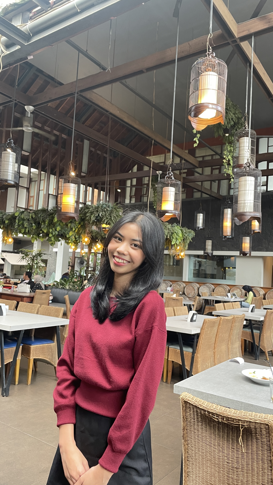

Chaira Bakery berdiri sejak tahun 2020 di Kota Bandung, berawal dari dapur rumahan yang penuh cinta dan semangat untuk berbagi kebahagiaan lewat kue-kue lezat.
Berawal dari pesanan kecil untuk acara keluarga dan tetangga, kini Chaira Bakery telah dipercaya oleh ratusan pelanggan setia — dari kue ulang tahun, anniversary, hingga snack box untuk acara kantor dan syukuran.
Kami percaya bahwa setiap kue bukan hanya soal rasa, tapi juga tentang memori manis yang tercipta di baliknya. Oleh karena itu, kami menggunakan bahan-bahan pilihan: telur ayam kampung, mentega asli, coklat couverture, dan buah segar tanpa pengawet — semua diracik dengan tangan penuh keikhlasan.
Nama “Chaira” terinspirasi dari kata “Cahaya” dan “Ikhlas” — yang mencerminkan komitmen kami: menjadi cahaya kebahagiaan melalui produk yang dibuat dengan ikhlas, bersih, dan penuh doa.
✨ “Setiap potong kue adalah doa yang dipanggang dengan kasih.”
|

Chaira Puspita Bilqis |
Chaira memulai usaha ini dari dapur rumahnya dengan satu prinsip: “Kue yang baik lahir dari hati yang tulus.” Ia aktif mengembangkan resep lokal-modern seperti Pandan Cake dengan Gula Aren dan Choconut Roll, serta memastikan setiap pesanan diproses dengan standar higienis tertinggi. 📱 Hubungi Kami
📩 Kami merespons dalam 1×24 jam. Untuk pemesanan, minimal 2 hari sebelum acara. |